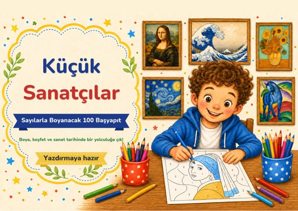

Ana kitap
Küçük Sanatçılar – Sayılarla Boyanacak 100 Başyapıt
55 büyük sanatçıdan sayılarla boyanacak 100 başyapıt, her eserin hikâyesiyle birlikte.
Bonusların
Bonus 1
İlk Adımlar – Küçük Ustanın 7 Günü
7 gün, her gün bir başyapıt ve küçük bir görev: bak, boya, anlat.
Bonus 2
Ayrıntı Avı – Müzede 30 Görev
Tablolarda saklı renkleri, şekilleri ve ayrıntıları aramak için 30 gözlem görevi.
Bonus 3
İlk Sergim – Eksiksiz Sergi Seti
Evdeki sergi için etiketler, davetiyeler, afiş, pasaportlar, ziyaretçi defteri ve diploma.
Nereden başlamalı?
- Ana kitabı aç, 100 başyapıttan birini seç ve sayfayı A4 kâğıda gerçek boyutunda yazdır.
- Orijinal eseri incele, ilginç bilgileri oku ve resmi renk anahtarına göre boya.
- Sonra “İlk Adımlar” bonusundaki 7 günlük programa ve “Ayrıntı Avı” bonusundaki 30 göreve geç.
- Birkaç resim bitince “İlk Sergim” setiyle evde kendi sergini düzenle.
Sonraki adım
Bugün çocuğunun sevdiği bir sayfayı yazdır ve onunla birlikte boya. İlk resim bitince “İlk Adımlar” bonusunun 1. gününe geç.
Yalnızca kişisel, aile içi veya sınıf içi kullanım içindir. Yeniden satışı ve dağıtımı yasaktır.